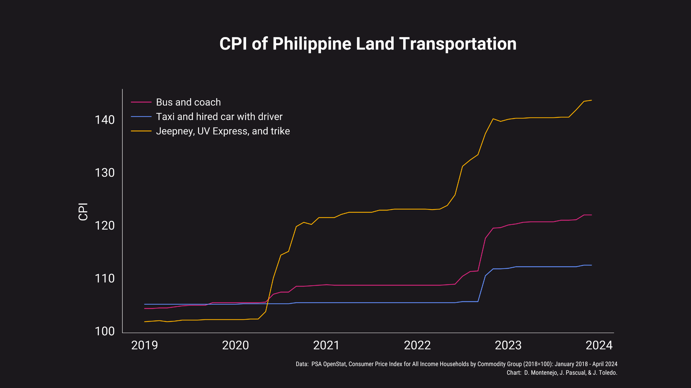
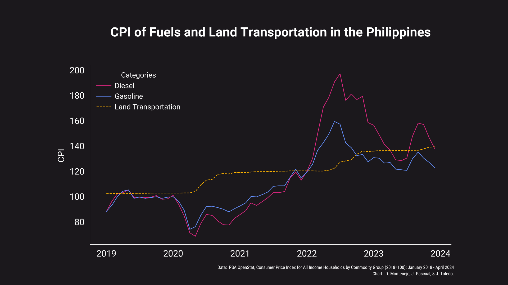

Overview
Background of the Study
Currently, 80% of Filipinos living in urban areas rely on public
transportation. In Metro Manila alone, 70% of people are dependent on
public transportation to get from place to place. Every day, the number
of commuters who ride jeepneys and buses are 8,959,000 and 1,865,000,
respectively.
While there may be other factors as to why Filipinos choose to commute,
the main benefit of public transportation is how much more affordable it
is compared to the cost of owning a private vehicle and constantly
spending money on fuel, maintenance, and parking fees. According to a
2018 Consumer Finance Survey, the monthly expenditure level in Metro
Manila was at P27,507/month. Of this, 10.5% was spent on transportation.
Most Filipino commuters are from low to middle income classes. The
minimum wage in the Philippines varies per province with Metro Manila
having the highest amount at P610/day or around P18,300/month; thus, it
is difficult for many to allocate such a large budget for
transportation.
After Russia’s invasion of Ukraine, the price of gas and fuel surged
worldwide. The Department of Energy released data that showing that
77.4% of its gas, 80% of its diesel and 84% of its kerosene are imported
by the Philippines. As a result, the global increase in gas prices have
led to the significant increase of local gas prices, which has also
largely added to the financial burden of Filipinos.
References:
[1]
[2]
[3]
[4]
[5]
[6]
[7]
[8]
Problem
Many Filipinos are reliant on public transportation as a means to travel
to different destinations. Because of this, they are heavily affected by
changes in its prices.
Solution
Through data science, the group aims to draw insights regarding the
state of public transportation prices in the Philippines and its
implications to Filipino commuters.
Objectives
-
To analyze the CPI of public transportation in the Philippines over
the past five years
-
To determine the relationship between the CPI of fuel/gas and public
transportation over the past five years.
Primary Research Question
What is the overall trend of the CPI of public transportation over the
past five years?
Null Hypothesis
The CPI of Public transportation has not increased over the past
five years.
Alternative Hypothesis
The CPI of Public transportation has increased over the past five
years.
Secondary Research Question
Is there a relationship between the CPI of fuel/gas and public
transportation over the past five years?
Null Hypothesis
There is no relationship between the CPI of fuel/gas and public
transportation over the past five years.
Alternative Hypotheses
There is a relationship between the CPI of fuel/gas and public
transportation over the past five years
Data
Data Collection
To address the overarching problem and the proposed research questions,
our group opted to utilize the data set entitled
“Consumer Price Index for All Income Households by Commodity Group
(2018=100): January 2018 - March 2024”
data set found on the
OpenStat website
, an initiative made by the
Philippine Statistics Authority.
The data set as a whole is massive, as it lists the Consumer Price Index
(CPI) of various commodities under different commodity groups, wherein
the CPI is computed based on the province or region monthly.
Given the scope of our study, we will perform modifications onto the
data set, which includes reformatting it as a whole followed by
preprocessing. Details about our data set will be presented below.
About the data set
After performing preprocessing and reformatting, our data set now
contains a total of 44850 entries. Moreover, the data set now has five
columns instead of just two, which was found in the raw data set. From
left to right, these columns are:
- Geolocation
- Commodity Description
- CPI
- Year
- Month
In this case, the years we consider are the years 2019 to 2023, since we
specifically wanted to know the transportation situation in the past
five years. It is worth noting that the year 2024 was not considered as
data for this year is still incomplete. The months we consider are
January to December with an additional average value. This aside, since
every entry represents a totally different CPI value, no sampling method
will be used here.
At this step, we first extracted the relevant data from the original
data set. After doing so, we manually removed excess rows and filled
in the missing Geolocation and Year entries. We then restructured
the data set into a different format to make data access easier.
After preparing our data set, we now perform preprocessing to ensure
that the data is clean and consistent. As we performed this step, we
found that only the CPI column has null values and performed some
steps to ensure that such is addressed. Entries with null CPI may
either be dropped or replaced by an aggregate value depending how
many entries of the same Geolocation are also null. In the end, all
the CPI values are converted into floats as they are initially in
string format.
Checkout our Python notebook to see the procedure in much more detail.
Similarly, our preprocessed data set can be found
here.
Exploratory Data Analysis (EDA)
Now that our data set is cleaned and well-formatted, we can now proceed
to exploratory data analysis. Essentially, this step involves creating
(clear) visualizations to help us understand the data, and using this
information to determine if our established hypotheses are correct.
Following this, we will perform hypothesis testing to see what results
we can derive from the data.
Data Visualization
For this study, we conceptualized three different plots that aim to help
us answer our Research Questions, and understand our project in a visual
manner.

Primary Research Question: What is the overall trend of
the CPI of public transportation over the past five years?
From our visualization, we can see that the CPI of all transportation groups seem to
be going upward over the years. Generally, the CPI for all transportation groups seem
to be continuously increasing until it plateaus on some maximum and will eventually
increase again after some amount of time.

Secondary Research Question: Is there a relationship
between the CPI of fuel/gas and public transportation over the past five years?
From here, we can see that the CPI for both fuel and land transportation seem to be
going upwards, albeit at different rates. This suggests that they may be correlated to
one another. Nevertheless, it is worth noting that the CPI for fuel fluctuates,
whereas the CPI for land transportation is relatively more stable.
Hypothesis Testing
Following this, hypothesis testing was done to test the hypothesis made for each of our
research questions.
Primary Research Question: What is the overall trend of
the CPI of public transportation over the past five years?
Null hypothesis: The CPI of Public transportation has not
increased over the past five years.
Alternative hypothesis: The CPI of Public transportation
has increased over the past five years.
Secondary Research Question: Is there a relationship
between the CPI of fuel/gas and public transportation over the past five years?
Null hypothesis: There is no relationship between the CPI
of fuel/gas and public transportation over the past five years.
Alternative hypothesis: There is a relationship between
the CPI of fuel/gas and public transportation over the past five years.